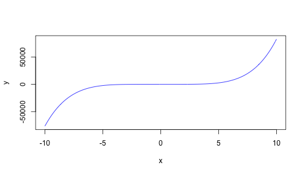

How many times have you wondered how would that polynomial function look like?
Pen and paper is boring and exhasperating...
and you not always have RStudio or Matlab around...
but you always have a browser close to you!
E. Valencia
How many times have you wondered how would that polynomial function look like?
Pen and paper is boring and exhasperating...
and you not always have RStudio or Matlab around...
but you always have a browser close to you!
The browser is the most widely spread runtime environment.
Polynomial Plotter solves your pain point allowing you to plot that polynomial function right inside your browser.
Polynomial Plotter is a Shiny app that shines by itself ;p
Coefficients are input from highest order to the lowest one: \[y = \alpha_5 \cdot x^5 + \alpha_4 \cdot x^4 + \alpha_3 \cdot x^3 + \alpha_2 \cdot x^2 + \alpha_1 \cdot x + \alpha_0\]
For instance, \(\alpha_5=0.8\), \(\alpha_4=0.3\), \(\alpha_3=-0.5\), \(\alpha_2=0.4\), \(\alpha_1=-0.2\), and \(\alpha_0=0\) will produce following plot:
x <- seq(-10,10,0.1)
y <- 0.8*x^5 + 0.3*x^4 - 0.5*x^3 + 0.4*x^2 - 0.2*x + 0
plot(x,y,col='blue',type='l')
